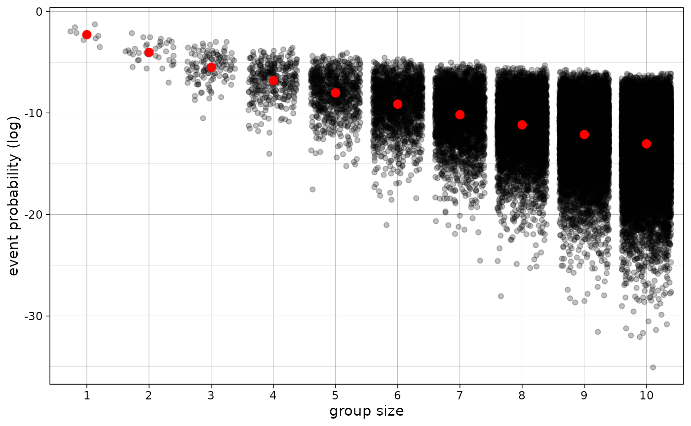
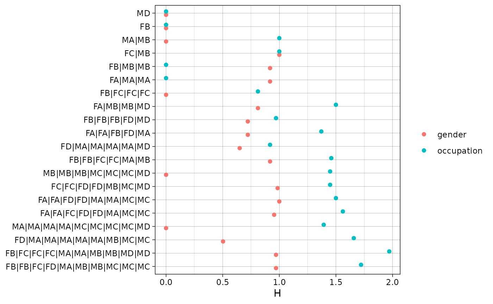

The purpose of this notebook is to proof the importance of this method by testing it on simulated data with known parameters.
library(seaR)
#load_all()
## data wrangling + plotting packages
library(tidyverse)
theme_set(theme_linedraw(base_family = "Avenir Next Condensed"))
## tables packages
library(modelsummary)
library(gt)Simple Random Mixing Model
Let’s start with a simple model with two gender identities, three occupational identities, and group sizes ranging from 1 to 10.
gender <- c("M", "F")
occupation <- c("A", "B", "C", "D")
risk_set_size(1:10, gender, occupation)## Total: 43,757## 1 2 3 4 5 6 7 8 9 10
## 8 36 120 330 792 1716 3432 6435 11440 19448## Rows: 43,757
## Columns: 2
## $ .id <chr> "MA", "FA", "MB", "FB", "MC", "FC", "MD", "FD", "MA|MA", "FA|MA"…
## $ .size <int> 1, 1, 1, 1, 1, 1, 1, 1, 2, 2, 2, 2, 2, 2, 2, 2, 2, 2, 2, 2, 2, 2…I will store the individual identities in this risk set in a vector
named identities.
identities <- get_identities(rs)
identities## [1] "MA" "FA" "MB" "FB" "MC" "FC" "MD" "FD"I will assume the following marginal probabilities:
Note. You would normally estimate these joint probabilities from a dataset instead of assuming that they are independent.
jp <- outer(p1, p2) ## joint probabilities under independence
probs <- vector("double", length(jp))
for (i in seq_along(probs)) {
probs[[i]] <- as.vector(jp)[[i]]
}
names(probs) <- identities
## calculate event probabilities, here given as log(p)
rs$lp <- event_probs(rs, identities, probs = probs, log = TRUE)
jp## A B C D
## M 0.14 0.21 0.28 0.07
## F 0.06 0.09 0.12 0.03
probs## MA FA MB FB MC FC MD FD
## 0.14 0.06 0.21 0.09 0.28 0.12 0.07 0.03
glimpse(rs)## Rows: 43,757
## Columns: 3
## $ .id <chr> "MA", "FA", "MB", "FB", "MC", "FC", "MD", "FD", "MA|MA", "FA|MA"…
## $ .size <int> 1, 1, 1, 1, 1, 1, 1, 1, 2, 2, 2, 2, 2, 2, 2, 2, 2, 2, 2, 2, 2, 2…
## $ lp <eprobs> -1.966113, -2.813411, -1.560648, -2.407946, -1.272966, -2.120…Note that these event probabilities sum up to one if we condition on group size. (See definitions).
rs |>
group_by(.size) |>
summarize(p = exp(log_sum_exp(lp))) ## # A tibble: 10 × 2
## .size p
## <int> <dbl>
## 1 1 1
## 2 2 1
## 3 3 1
## 4 4 1
## 5 5 1
## 6 6 1.00
## 7 7 1.00
## 8 8 1.00
## 9 9 1
## 10 10 1.00Model Parameters
Now I will simulate observations from the following model:
\[ \begin{align} N_i &\sim \text{Poisson}(\lambda_i) \\\\ \log(\lambda_i) &= 6 + \underbrace{\log(p_i)}_\text{offset} \end{align} \]
Among other things, this model implies that each “group size” gets roughly the same number of counts—i.e., there’s no regression coefficient that incorporates group size.
## # A tibble: 10 × 2
## .size obs
## <int> <int>
## 1 1 391
## 2 2 400
## 3 3 377
## 4 4 393
## 5 5 409
## 6 6 432
## 7 7 398
## 8 8 406
## 9 9 404
## 10 10 394We should also keep in mind that larger group size will make each event probability smaller and that—more importantly—we should see more zeroes at larger group sizes for the same reason.

Risk set:
nrow(d)## [1] 43757Observed risk set:
## [1] 2129Now we are ready to see if we can recover the known parameters from the data.
Results (Missing Data)
Results from using only groups that actually form (i.e., no zeroes).
d_sub <- filter(d, s > 0)
m1 <- glm(s ~ 1, family = "poisson", data = d_sub)
m2 <- glm(s ~ 1 + .size, family = "poisson", data = d_sub)
m3 <- glm(s ~ 1, family = "poisson", data = d_sub, offset = lp)
m4 <- glm(s ~ 1 + .size, family = "poisson", data = d_sub, offset = lp)
modelsummary::msummary(
models = list(m1, m2, m3, m4),
stars = TRUE,
gof_map = c("nobs", "aic", "bic"),
notes = "Models 1-2 don't include offset term. Model 3 is correctly specified.",
title = "Incomplete Risk Set (Missing Data)",
output = "gt"
) |> gt::opt_table_font("Avenir Next")| (1) | (2) | (3) | (4) | |
|---|---|---|---|---|
| (Intercept) | 0.632*** | 2.730*** | 6.476*** | 5.466*** |
| (0.016) | (0.042) | (0.016) | (0.036) | |
| .size | -0.329*** | 0.211*** | ||
| (0.007) | (0.006) | |||
| Num.Obs. | 2129 | 2129 | 2129 | 2129 |
| AIC | 9580.9 | 7346.5 | 8396.4 | 7165.6 |
| BIC | 9586.5 | 7357.8 | 8402.0 | 7177.0 |
| + p < 0.1, * p < 0.05, ** p < 0.01, *** p < 0.001 | ||||
| Models 1-2 don't include offset term. Model 3 is correctly specified. | ||||
Results (Complete Data)
Results from using all possible groups.
m1 <- glm(s ~ 1, family = "poisson", data = d)
m2 <- glm(s ~ 1 + .size, family = "poisson", data = d)
m3 <- glm(s ~ 1, family = "poisson", data = d, offset = lp)
m4 <- glm(s ~ 1 + .size, family = "poisson", data = d, offset = lp)
modelsummary::msummary(
models = list(m1, m2, m3, m4),
stars = TRUE,
gof_map = c("nobs", "aic", "bic"),
notes = "Models 1-2 don't include offset term. Model 3 is correctly specified.",
title = "Complete Risk Set",
output = "gt"
) |> gt::opt_table_font("Avenir Next")| (1) | (2) | (3) | (4) | |
|---|---|---|---|---|
| (Intercept) | -2.391*** | 3.787*** | 5.992*** | 5.973*** |
| (0.016) | (0.040) | (0.016) | (0.034) | |
| .size | -0.821*** | 0.004 | ||
| (0.007) | (0.006) | |||
| Num.Obs. | 43757 | 43757 | 43757 | 43757 |
| AIC | 33789.1 | 20687.7 | 12271.2 | 12272.8 |
| BIC | 33797.7 | 20705.1 | 12279.9 | 12290.2 |
| + p < 0.1, * p < 0.05, ** p < 0.01, *** p < 0.001 | ||||
| Models 1-2 don't include offset term. Model 3 is correctly specified. | ||||
Technical Discussion.
The standard errors are super small, which makes it suspicious to apply the statistical significance framework in this context.
I don’t understand why there’s an effect for group size when using the the incomplete risk set adjusting for event probabilities (model 4). The effect of group size on \(N\) should only operate via event probabilities.

Group Size Predictor
Model Parameters
Now I will simulate observations from the following model:
\[ \begin{align} N_i &\sim \text{Poisson}(\lambda_i) \\\\ \log(\lambda_i) &= 6 - 0.2 \cdot \text{size}_i + \underbrace{\log(p_i)}_\text{offset} \end{align} \]
Among other things, this model implies that each “group size” gets roughly 18% less number of counts for each additional increase in size.
## # A tibble: 10 × 2
## .size obs
## <int> <int>
## 1 1 299
## 2 2 272
## 3 3 248
## 4 4 177
## 5 5 163
## 6 6 119
## 7 7 102
## 8 8 79
## 9 9 73
## 10 10 73Note. This means we also get much more missing data (i.e., events with 0 counts).
Risk set:
nrow(d)## [1] 43757Observed risk set:
## [1] 743Now we are ready to see if we can recover the known parameters from the data.
Results (Missing Data)
Results from using only groups that actually form (i.e., no zeroes).
d_sub <- filter(d, s > 0)
m1 <- glm(s ~ 1, family = "poisson", data = d_sub)
m2 <- glm(s ~ 1 + .size, family = "poisson", data = d_sub)
m3 <- glm(s ~ 1, family = "poisson", data = d_sub, offset = lp)
m4 <- glm(s ~ 1 + .size, family = "poisson", data = d_sub, offset = lp)
modelsummary::msummary(
models = list(m1, m2, m3, m4),
stars = TRUE,
gof_map = c("nobs", "aic", "bic"),
notes = "Models 1-2 don't include offset term. Model 4 is correctly specified.",
title = "Incomplete Risk Set (Missing Data)",
output = "gt"
) |> gt::opt_table_font("Avenir Next")| (1) | (2) | (3) | (4) | |
|---|---|---|---|---|
| (Intercept) | 0.770*** | 2.847*** | 5.856*** | 5.200*** |
| (0.025) | (0.058) | (0.025) | (0.050) | |
| .size | -0.414*** | 0.181*** | ||
| (0.013) | (0.011) | |||
| Num.Obs. | 743 | 743 | 743 | 743 |
| AIC | 4220.9 | 2991.4 | 2795.1 | 2535.1 |
| BIC | 4225.5 | 3000.6 | 2799.7 | 2544.3 |
| + p < 0.1, * p < 0.05, ** p < 0.01, *** p < 0.001 | ||||
| Models 1-2 don't include offset term. Model 4 is correctly specified. | ||||
Results (Complete Data)
Results from using all possible groups.
m1 <- glm(s ~ 1, family = "poisson", data = d)
m2 <- glm(s ~ 1 + .size, family = "poisson", data = d)
m3 <- glm(s ~ 1, family = "poisson", data = d, offset = lp)
m4 <- glm(s ~ 1 + .size, family = "poisson", data = d, offset = lp)
modelsummary::msummary(
models = list(m1, m2, m3, m4),
stars = TRUE,
gof_map = c("nobs", "aic", "bic"),
notes = "Models 1-2 don't include offset term. Model 3 is correctly specified.",
title = "Complete Risk Set",
output = "gt"
) |> gt::opt_table_font("Avenir Next")| (1) | (2) | (3) | (4) | |
|---|---|---|---|---|
| (Intercept) | -3.306*** | 4.155*** | 5.078*** | 5.941*** |
| (0.025) | (0.053) | (0.025) | (0.046) | |
| .size | -1.090*** | -0.181*** | ||
| (0.011) | (0.009) | |||
| Num.Obs. | 43757 | 43757 | 43757 | 43757 |
| AIC | 17303.9 | 7645.1 | 5293.1 | 4895.6 |
| BIC | 17312.6 | 7662.5 | 5301.7 | 4912.9 |
| + p < 0.1, * p < 0.05, ** p < 0.01, *** p < 0.001 | ||||
| Models 1-2 don't include offset term. Model 3 is correctly specified. | ||||

Group Size & Diversity Predictors
Model Parameters
Now I will simulate observations from the following model:
\[ \begin{align} N_i &\sim \text{Poisson}(\lambda_i) \\\\ \log(\lambda_i) &= 7 - 0.2 \cdot \text{size}_i + 0.3 \cdot \text{od}_i - 0.5 \cdot \text{gd}_i + \underbrace{\log(p_i)}_\text{offset} \end{align} \]
This presumes that whatever we expect to less groups with gender diversity (or more groups with gender homophily) and more groups with occupational diversity (or less groups with occupational homophily).
The seaR package includes function called
H() which calculates Shannon’s entropy measurement, which
is also a common measurement of diversity in the ecological
literature.
rs$gender_div <- H(rs, gender)
rs$occupation_div <- H(rs, occupation)
d <- rs |>
## simulate data from known parameters
mutate(s = rpois(n(), exp(7 - 0.2*.size + 0.3*occupation_div - 0.5*gender_div + lp))) To get a sense of what this means, the following plot takes a random sample of groups and shows their corresponding measures of diversity.

Risk set:
nrow(d)## [1] 43757Observed risk set:
## [1] 1584Now we are ready to see if we can recover the known parameters from the data.
Results (Missing Data)
Results from using only groups that actually form (i.e., no zeroes).
d_sub <- filter(d, s > 0)
m1 <- glm(s ~ 1, family = "poisson", data = d_sub)
m2 <- glm(s ~ .size, family = "poisson", data = d_sub)
m3 <- glm(s ~ .size + occupation_div, family = "poisson", data = d_sub)
m4 <- glm(s ~ .size + gender_div, family = "poisson", data = d_sub)
m5 <- glm(s ~ .size + occupation_div + gender_div, family = "poisson", data = d_sub)
modelsummary::msummary(
models = list(m1, m2, m3, m4, m5),
stars = TRUE,
gof_map = c("nobs", "aic", "bic"),
notes = "Models 1-2 don't include offset term. Model 4 is correctly specified.",
title = "Incomplete Risk Set (Missing Data) || NO OFFSET",
output = "gt"
) |> gt::opt_table_font("Avenir Next")| (1) | (2) | (3) | (4) | (5) | |
|---|---|---|---|---|---|
| (Intercept) | 1.044*** | 4.092*** | 4.271*** | 4.315*** | 4.422*** |
| (0.015) | (0.036) | (0.035) | (0.035) | (0.034) | |
| .size | -0.584*** | -0.475*** | -0.501*** | -0.423*** | |
| (0.008) | (0.010) | (0.008) | (0.010) | ||
| occupation_div | -0.591*** | -0.443*** | |||
| (0.032) | (0.033) | ||||
| gender_div | -1.024*** | -0.945*** | |||
| (0.036) | (0.037) | ||||
| Num.Obs. | 1584 | 1584 | 1584 | 1584 | 1584 |
| AIC | 14435.9 | 8290.9 | 7966.1 | 7507.4 | 7332.7 |
| BIC | 14441.3 | 8301.6 | 7982.2 | 7523.5 | 7354.2 |
| + p < 0.1, * p < 0.05, ** p < 0.01, *** p < 0.001 | |||||
| Models 1-2 don't include offset term. Model 4 is correctly specified. | |||||
m1 <- glm(s ~ 1, family = "poisson", data = d_sub, offset = lp)
m2 <- glm(s ~ .size, family = "poisson", data = d_sub, offset = lp)
m3 <- glm(s ~ .size + occupation_div, family = "poisson", data = d_sub, offset = lp)
m4 <- glm(s ~ .size + gender_div, family = "poisson", data = d_sub, offset = lp)
m5 <- glm(s ~ .size + occupation_div + gender_div, family = "poisson", data = d_sub, offset = lp)
modelsummary::msummary(
models = list(m1, m2, m3, m4, m5),
stars = TRUE,
gof_map = c("nobs", "aic", "bic"),
notes = "Models 1-2 don't include offset term. Model 4 is correctly specified.",
title = "Incomplete Risk Set (Missing Data) || INCLUDING OFFSET",
output = "gt"
) |> gt::opt_table_font("Avenir Next")| (1) | (2) | (3) | (4) | (5) | |
|---|---|---|---|---|---|
| (Intercept) | 6.645*** | 6.460*** | 6.491*** | 6.517*** | 6.535*** |
| (0.015) | (0.030) | (0.031) | (0.030) | (0.030) | |
| .size | 0.047*** | 0.074*** | 0.076*** | 0.091*** | |
| (0.006) | (0.009) | (0.007) | (0.009) | ||
| occupation_div | -0.139*** | -0.089* | |||
| (0.034) | (0.035) | ||||
| gender_div | -0.350*** | -0.335*** | |||
| (0.038) | (0.039) | ||||
| Num.Obs. | 1584 | 1584 | 1584 | 1584 | 1584 |
| AIC | 5820.2 | 5769.3 | 5754.9 | 5687.0 | 5682.5 |
| BIC | 5825.5 | 5780.0 | 5771.1 | 5703.1 | 5703.9 |
| + p < 0.1, * p < 0.05, ** p < 0.01, *** p < 0.001 | |||||
| Models 1-2 don't include offset term. Model 4 is correctly specified. | |||||
Results (Complete Data)
Results from using all possible groups.
m1 <- glm(s ~ 1, family = "poisson", data = d)
m2 <- glm(s ~ .size, family = "poisson", data = d)
m3 <- glm(s ~ .size + occupation_div, family = "poisson", data = d, offset = lp)
m4 <- glm(s ~ .size + gender_div, family = "poisson", data = d, offset = lp)
m5 <- glm(s ~ .size + occupation_div + gender_div, family = "poisson", data = d, offset = lp)
modelsummary::msummary(
models = list(m1, m2, m3, m4, m5),
stars = TRUE,
gof_map = c("nobs", "aic", "bic"),
notes = "Models 1-2 don't include offset term. Model 3 is correctly specified.",
title = "Complete Risk Set",
output = "gt"
) |> gt::opt_table_font("Avenir Next")| (1) | (2) | (3) | (4) | (5) | |
|---|---|---|---|---|---|
| (Intercept) | -2.275*** | 5.219*** | 6.950*** | 7.036*** | 6.983*** |
| (0.015) | (0.032) | (0.029) | (0.027) | (0.029) | |
| .size | -1.098*** | -0.221*** | -0.155*** | -0.198*** | |
| (0.007) | (0.008) | (0.007) | (0.009) | ||
| occupation_div | 0.189*** | 0.270*** | |||
| (0.034) | (0.034) | ||||
| gender_div | -0.343*** | -0.413*** | |||
| (0.040) | (0.041) | ||||
| Num.Obs. | 43757 | 43757 | 43757 | 43757 | 43757 |
| AIC | 44290.9 | 16838.2 | 9434.6 | 9393.5 | 9334.2 |
| BIC | 44299.6 | 16855.6 | 9460.6 | 9419.5 | 9368.9 |
| + p < 0.1, * p < 0.05, ** p < 0.01, *** p < 0.001 | |||||
| Models 1-2 don't include offset term. Model 3 is correctly specified. | |||||
Technical Discussion.
- The standard errors are super small, which makes it suspicious to apply the statistical significance framework in this context.